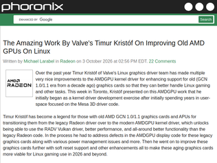
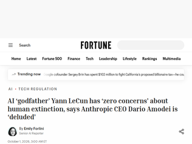
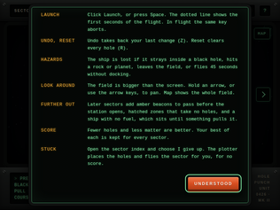
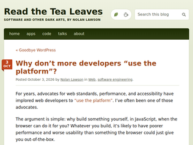

"I'm a little skeptical of going below 4-bit quants due to the potential for significant degradation in quality. I'm running 4-bit quants on an RTX Pro 6000 rented for approximately $1/hour and getting about 1.2 million tokens out and 40 million tokens in per hour with caching. The quality of 4-bit quant is good enough for difficult but well-scoped coding tasks. Here is the inference stack I am using: https://www.reddit.com/r/BlackwellPerformance/s/FrKwk3GoDK"
"I would love to have that To Do list interface in Pi. Pi is great and my daily driver but it only has such nice pop-up TUI for the sub-agent management. I use it on a monitor which is tipped 90°, so I have a lot of room for TUI stuff, and a live To Do list would be awesome to glance at.Edit: I am referring to the To Do list shown in the TUI in this screenshot from the repo: https://raw.githubusercontent.com/Niko1221/Strata/refs/heads..."
"I've just tested Strata on a simple 50 image vision benchmark. The task is to output the exact coordinates of a requested object. The result via Strata had a median error distance of 154.8 pixels, avg of 168.8. Running the exact same GGUF and vision adapter weights on llama.cpp gives me a median error of 46.5, avg 81.4.To put that into perspective, here are some more numbers from other models via llama.cpp:Median/AverageQwen 3.5 9B BF16: 46.5 / 193.3Qwen 3.6 35B Q4 K XL: 38.4 / 76.4Qwen 3.5 122B Q3 K M: 32.9 / 68.6The difference in vision performance is as large as the jump from a 9B model to a 35B model. All tests were performed at temp=0.I have done no further testing, as these results line up perfectly with my expectations."
"Reminds me of all the de-crufting you've always needed to do when you install Windows. Looks like we've gotten to the point on macOS too, where you need to run third party scripts on a new OS installation to gain back control of your system resources and remove unwanted crapware."
"I no longer have a Mac as I’ve moved over to Linux, but my iOS device leaves me very frustrated that I can no longer disable this AI stuff with a simple toggle.It seems insane given that Apple’s competitors (Microsoft, Firefox, probably others) moved toward a global AI switch to make the choice easy for their customers."
"This is stuff on the level of O&O ShutUp10. Which is a good tool, but also, a Windows tool for very (back in the day) Windows-specific nonsense.What's going on at Apple product strategy?"

"I just bought a used Ayaneo 2 handheld, it has an old(er) mobile RDNA 2 GPU and I was blown away by how well this thing performed under Linux. Almost everything (that's not a recent AAA game) runs beautiful and a lot faster/smoother than it does under Windows. The experience has been so good that I'm considering switching my main pc (with a 9070XT) to Linux as well.No doubt Timur contributed heavily to this given Valves Steamdeck (which uses a very similar but slower GPU).Given the current hardware prices it's pretty awesome to see someone squeezing maximum performance out of old hardware!"
"I have AI fatigue, but the potentially for fixing bugs in old hardware is very exciting to me.Perhaps we will even be able to reverse firmware blobs into open source alternatives?"
"Direct link to the talk, with timestamp: https://youtu.be/j5W5ErEMnvM?t=21385"
"OpenAI and other frontier labs won't ever introduce safety-level standards like those used for railways or nuclear plants until they are forced to do so by customers or by law. The reason is simple: safety is expensive, and if safety is introduced properly, development is no longer mainly about how to implement feature A. Instead, it becomes much more about how to design two or more redundant systems to implement feature A safely, while also documenting everything clearly and having it audited by an independent auditor.So the focus completely shifts from spending 90% of the effort on the functionality of feature A to spending 99% of the effort figuring out how to safely implement even a lightweight feature A."
"There are numerous problems with “alignment.” What are “human values” to begin with? He outlines some at the beginning of the post, implicitly: build bigger, better, more powerful things faster without adequate safeguards. We are literally pouring trillions of dollars of value into this enterprise, and I would say this is something that many humans also value in a qualitative sense. Then we have explicit values which in the West are largely rooted in Christian morality. Nietzsche circled this dichotomy two hundred years ago and I feel like what we have gotten since then is an increasingly detailed anatomy of power as the basis for what is normal vs deviant behavior. He who has the power, makes the rules, to be reductive.I do think this carries some weight from this particular author due to the length of his tenure. I happen to agree with him in spirit, but this is still largely a post revolving around sentiment not substance. Does anyone think that the overriding incentives even leave room for something like this in practice?"
"How about... not trying to build a superintelligence? The goal is unsalvageably flawed: alignment is ill defined and a future where humanity is the pet species of a god-like artificial intelligence is hardly an appealing one!"

"LLMs, plus broadly sourced yet expertly curated training sources, plus clever harnesses, plus RAS, etc. do an ever better job of synthesizing their training set into useful responses. For some use cases like coding, that's very useful now and likely to get at least somewhat better before reaching limitations based on the training set.That's not going to reach AGI, mainly because today's recipe for AI products isn't built to be AGI. Some people believe it will reach AGI because the performance and applicability of LLMs was emergent. There's a case to be made that AGI could be similarly emergent. After all, what we intuitively call our consciousness emerged from a network of neurons.I don't buy it, mainly because the network of neurons and how they interact in our wet slow electrochemical brains, while being in theory mathematically equivalent to a software neural network, isn't sufficiently well understood to tell us how close the software neural network is to being practically equivalent. The odds of consciousness emerging from the same neural network that gave us LLMs without some sort of theoretical breakthrough seems very small."
"A huge chunk of humans are sedated with infinite supply of cortex-disabling short form video and games.Another huge chunk are too distracted by having to scrape by for a living and work multiple jobs or raise kids and survive financially until exhausted. That second group will keep increasing as the first flows into it.The rest are aging, disabled, or too young and pegging themselves majorly in the first category until they hit the second.The people aware enough to hold on to their brain and do something with it in their time available are trying to figure out AI and how to make money with it. The variable rewards of promoting AI are turning into an addiction with some of them, especially if grasping for straws with little inherent insights into the problems prompted.So if you are able to fly above the AI-generated addictions and have the privilege of time to do it, see what you can do."
"LeCun also said back in 2022 that "if you train a machine, as powerful as it could be, your 'GPT-5000', on text", it will never be able to learn basic common-sense physics like that objects placed on tables will move along with them."
"You don't need documentation or the 3rd party memory systems. The code IS the documentation.All this stuff is LLM rube goldberg machines. It just pollutes context.I barely use AGENTS.md/CLAUDE.md these days. And where they remain, it's super basic high level stuff.I'm honestly still kicking myself in the ass on many projects where I did something similar to this. I kept tons of markdown docs and decision docs. Now those things are just causing problems because they got stale. Even after having sessions of reconciling documentation, the LLM just gets confused."
"This is something I've been fooling with a lot lately. Reading his solution, it look to me like his objections apply to his own solution. The sharpest critique he makes of RAG is that agents can't search for what they don't know. A markdown "brain" has the same problem. How does the "agent" know which documents are relevant before it starts? The index files retrieval done by the agent instead of by embeddings doesn't escape the problem. The same goes for staleness (which for me seems like a constant chase). He criticizes memory systems for treating the past as truth, but documents go stale too (a lot). The fix of having the agent update what's outdated, is the same job he's ridiculing the dreamers and background daemons for doing. He says "putting it to the test"; where's the test? He says "only five of the many problems"; if there's so many, show me, don't just say it. He's absolutely right about auditability, but for me at least Claude uses a regular markdown (MD) file I can read just fine. So every memory plugin on the market does not work the same way.This is a first draft; his github is better than his article. Looking through it, Consult actually works. The agent doesn't pick documents blind. Every scope has a catalog file that describes each document: what it covers, when to open it. These catalogs seem to load in to the start of each session, so the agent gets a little map without reading every file. Code navigation seems the same. Each index document has a short description and a "read_if", and subindexes are opened when their condition matches the job. This looks pretty well laid out, which I would never have guessed from the article."
"I think whichever one is used, there needs to be a way to enforce what's written.If I say "use jq instead of writing a python script to parse json" it should never write adhoc python scripts to parse json. Yet that constantly happens to me anyway."

"Great game, though the controls on mobile are a bit too imprecise.As you drag a hole, the size widgets should disappear so you can better see what's around it. They could pop back up again once you're done dragging.Personally I'd rather if you had to press a button or something (or long press?) to add a new hole. I keep accidentally adding new ones when all I want to do is adjust an existing one.Also spamming the user with the help screen right off the bat is a bit much. As long as they know it's there and can pull it up / dismiss it, I think it would be more fun to sort of discover the game mechanics yourself.Note several of the first 8 or so levels can be accomplished with a single minimum (8) sized black hole. Eg. I liked the simplicity of doing that on level 6."
"Well, this is strangely familiar to a game I just vibe-coded recently!https://www.michaelfogleman.com/gravity-assist/"
"This is the year of old browser (and/or flash) games making a comeback in some form."
"I lived in a smaller rural town near a Google datacenter. During my career there I had routinely come across some outlandish accusations made about our water/power usage from the locals. But for obvious reasons I could never dispute them. I remember we hired a local who'd grown up in the town and he was "really surprised" when he started to see what we were doing to remain efficient.The current data center craze just feels like the same thing but on a bigger scale."
"As other commenters have pointed out, 13.3 million gallons = ~40.8 acre-feet and this being Nebraska, the obvious comparison is agriculture (Corn and Soybeans being the main crop).The average Nebraska farm is 989 acers[1] as of 2022 and uses roughly ~1,200 acre-feet of water (or roughly 390 million gallons) per year[2]. So a single average Nebraska farm uses roughly 30 times the water the Lincoln data center uses per year. There are 44,479 farms/ranches covering 44 million acres, which accounts for over 90% of the state's total land area.Until I looked this up, I didn't appreciate the scale of water usage in farming (even in a state like Nebraska that gets a large amount of rainfall compared to Central or Southern California). I hope that the current data center environmental focus continues to shed light on our industrial water and electrical usage.[1]http://farmflavor.com/nebraska/nebraska-crops-livestock/top-... [2]https://cropwatch.unl.edu/2024/2023-irrigation-and-water-man..."
"So, basically, not a meaningful amount of water at all. Credit to the story authors for taking the time to frame what 13MM gallons actually works out to."
"The Rodin Museum's bronzes are not even "the originals", which makes this whole thing amusing.The originals created by Rodin were clay models, from which plaster molds were made. Those were used to cast bronzes. Not just one bronze copy, many copies. There are at least 23 copies of "The Thinker" cast during Rodin's lifetime, and even more later copies.[1]In the SF Bay Area, the Palace of the Legion of Honor has one. One of the point clouds shown is of Rodin's "Gates of Hell", and a copy of that can be seen outside the Cantor Arts Center at Stanford, which has a small garden of Rodin bronzes. So if you really need a 3D scan, there are lots of bronzes available to scan.What scares the Rodin Museum is that they are still selling reproductions.[2] Resin copies are available through the gift shop, and bronze copies can be ordered. They have a complicated argument about "moral rights" to justify their monopoly which is marginal at this late date. (Rodin died in 1917.)[1] https://en.wikipedia.org/wiki/List_of_The_Thinker_sculptures[2] https://boutique.musee-rodin.fr/en/10-sculpture-reproduction..."
"Perhaps look at the case from another perspective.Ask if, since they used public money to create these, what public benefit was produced by it.If you can have them admit, or can prove, no public benefit, it's misspent public funds.If it's misspent public funds then its public reimbursement at the least for all the works they have scanned as a minimal response.You could argue the case the directors are liable for incompetence, or possibly criminality for knowingly misappropriating the public funds or contempt of court for earlier cases.When faced with this as a more serious charge, the museum may then choose to simply release the documents to settle the case. You may not even have to prove anything.IANAL but have been involved in (other country) public council appeals."
"I really want to understand the perspective of the other side of this case. Why did this museum care so much about this issue? They appear to have put an enormous legal effort into preventing the release of these point cloud scans. Why?"

"This got to me: > For a certain type of developer, building things yourself is just more funThe platform APIs were terrible. React wasn't "more fun"... it just made it possible to do things with the platform that were extremely difficult and cumbersome to get working reliably with platform APIs alone.To me, web components were an incredible idea poorly implemented. Most of the minimal adoption happened on top of frameworks like Lit that wrapped WCs to try to make the dev experience tolerable.In urban planning they have a concept called "desire paths" where if you don't put sidewalks and pathways in the right places, people invent their own. I feel like the web community has spent a lot of time and effort patching the platform.Now credit where credit is due: it has very much improved. And modern standards means it really is time to re-evaluate where and when you need these patches. But don't write off all that annoying and painful effort people put in to trying to making the platform deliver it's promised potential just to "building it yourself is more fun"."
"For one thing, I just genuinely think WebComponents are a badly designed API that is weird and hard to use (how many people are using WebComponents without at least Lit, if not something much bigger?), and React is a relatively well-designed library that isn't really that bloated. There's not really much of a point in trying to argue since this is inherently subjective and people with different values are going to irreconcilably disagree. But, if you don't respect that some people hold this position, we're not going to make any progress towards a consensus.On the note of <dialog>, I recently tried to use <dialog> in a (React) application, and it did work pretty well, but I also found that in Firefox it is only practically possible to do a fade-in animation, not a fade-out one. That isn't really a critical issue for me, it is just an animation after all, but I find it unfortunate. I also find <dialog> to be a weirdly shaped API too: I don't really hate it, but I don't love it either. It feels awkward.I find this implicit view that developers that, for example, prefer React over WebComponents are making a suboptimal choice to be rather condescending and not really in the spirit of trying to see things from the other side. Wouldn't you want to focus on the strongest arguments and not the weakest ones? Maybe you've literally never heard anyone complain about WebComponents or Shadow DOM, but if so, I find that surprising. Certainly here on HN, I've seen a fair bit of WebComponents hate.I do, FWIW, realize that I've particularly focused on WebComponents, which this article doesn't actually name directly. But, I assume we're not talking about ditching React to implement our own component framework on top of the traditional DOM APIs, because that's what React already does..."
"Your premise that the browser implementation is faster and better is rarely true. And when it is true, it's only true in a very narrow lane.Take for instance something like suggestions on form fields: you start typing something and it presents some options from a hardcoded list that matches the prefix. This is natively achieved through the HTML element <datalist>. However, <datalist> implementations on most browsers suck to the point of being unusable.The drive to roll your own is not so much that "it would be fun to learn this" as much as it's "rolling my own would let me express my vision exactly". What draws a lot of people to software engineering is that it lets you make anything you imagine. This is also what makes a lot of devs turn their nose at no-code and vibe-coding.If you can't build things exactly how you want them to be, then it's hard/impossible to build something that's truly genius."
Run Qwen 3.8 Flash Next (125B) on consumer hardware (RTX 4090) at 100T/s
"I'm a little skeptical of going below 4-bit quants due to the potential for significant degradation in quality. I'm running 4-bit quants on an RTX Pro 6000 rented for approximately $1/hour and getting about 1.2 million tokens out and 40 million tokens in per hour with caching. The quality of 4-bit quant is good enough for difficult but well-scoped coding tasks. Here is the inference stack I am using: https://www.reddit.com/r/BlackwellPerformance/s/FrKwk3GoDK"
"I would love to have that To Do list interface in Pi. Pi is great and my daily driver but it only has such nice pop-up TUI for the sub-agent management. I use it on a monitor which is tipped 90°, so I have a lot of room for TUI stuff, and a live To Do list would be awesome to glance at.Edit: I am referring to the To Do list shown in the TUI in this screenshot from the repo: https://raw.githubusercontent.com/Niko1221/Strata/refs/heads..."
"I've just tested Strata on a simple 50 image vision benchmark. The task is to output the exact coordinates of a requested object. The result via Strata had a median error distance of 154.8 pixels, avg of 168.8. Running the exact same GGUF and vision adapter weights on llama.cpp gives me a median error of 46.5, avg 81.4.To put that into perspective, here are some more numbers from other models via llama.cpp:Median/AverageQwen 3.5 9B BF16: 46.5 / 193.3Qwen 3.6 35B Q4 K XL: 38.4 / 76.4Qwen 3.5 122B Q3 K M: 32.9 / 68.6The difference in vision performance is as large as the jump from a 9B model to a 35B model. All tests were performed at temp=0.I have done no further testing, as these results line up perfectly with my expectations."